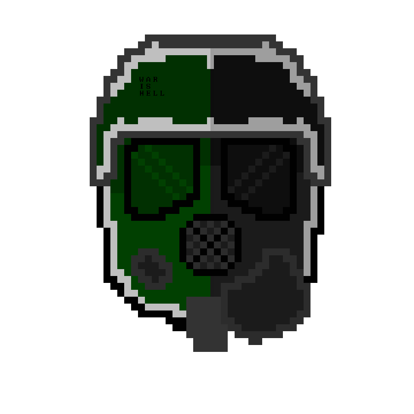

Hello! I'm ScootsChan, otherwise known as Scoots, Daniel, or ScootalooTheSpy (though I no longer use that last name.)
I'm usually just playing random games, from KanColle to Hearts of Iron 4.
But here you can see some random things I tend to code!
Reichs and Republics is an upcoming mod for Hearts of Iron 4! It takes place within Fredreic-005a of BallengerEarth, a version of the world which Jaden of Russia didn't surrender to the Swedes. The Weltkrieg burned the world, but with the revolutions going on, a second one is bound to happen.